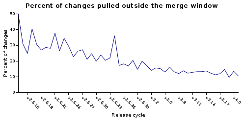

4.2 Merge window part 3
Such ideas are relatively easy to explore using the numbers, so here is the history from the last few years or so, showing non-merge changesets for each kernel release:
Release Merge
windowTotal %fixes v3.0 7333 9153 19.9 v3.1 7202 8693 17.2 v3.2 10214 11881 14.0 v3.3 8899 10550 15.6 v3.4 9248 10899 15.1 v3.5 9534 10957 13.0 v3.6 8587 10247 16.2 v3.7 10409 11990 13.2 v3.8 10901 12394 12.0 v3.9 10265 11910 13.8 v3.10 11963 13637 12.3 v3.11 9494 10893 12.8 v3.12 9479 10927 13.3 v3.13 10518 12127 13.3 v3.14 10622 12311 13.7 v3.15 12034 13722 12.3 v3.16 11364 12804 11.2 v3.17 10872 12354 12.0 v3.18 9711 11379 14.7 v3.19 11408 12617 9.6 v4.0 8950 10346 13.5 v4.1 10659 11916 10.5 v4.2 12092 ? ?
Since the beginning of the 3.x series, the average kernel release has seen 13.6% of its changes pulled after the close of the merge window. In the time between the releases of 3.15 and 4.1, 71,416 changesets were merged, of which 8,452 — 11.8% — came outside of the merge window. So one might conclude that the amount of code arriving outside the merge window has fallen a bit in the last year. If the 11.8% rate holds this time around, 4.2 will finish with 13,709 changesets, 13 short of the total for 3.15.
So, it's possible that 3.15 will remain the busiest development cycle ever, but your editor must conclude that the jury is still out on this one.
In any case, the long-term trend is clear:

Over time, the kernel development community has indeed gotten better at merging code that does not require fixing later in the development cycle.
Final changes for 4.2
There were just over 1,200 non-merge changesets pulled into the mainline kernel repository since last week's summary. Among those were:
- Large x86-based systems can now defer the
initialization of much of main memory, speeding the boot process.
- Some changes affecting how mounts of sysfs and /proc are
managed have been merged. Subdirectories that are meant to serve as
mount points (e.g. /sys/debug) are now marked as such, and
mounts are limited to those directories. Beyond that, new rules have
been added to ensure that new mounts of these filesystems (within a
container, say) respect the mount flags used with existing mounts.
The controversial enforcement of the
noexec and nosuid flags has been removed for now,
though.
- Synopsys DesignWare ARC HS38 processors are now supported. Other new
hardware support includes Dell airplane-mode switches,
TI TLC59108 and TLC59116 LED controllers,
Maxim max77693 LED flash controllers,
Skyworks AAT1290 LED controllers,
Broadcom BCM6328 and BCM6358 LED controllers,
Kinetic Technologies KTD2692 LED flash controllers,
TI CDCE925 programmable clock synthesizers,
Hisilicon Hi6220 clocks,
STMicroelectronics LPC watchdogs,
Conexant Digicolor SoC watchdogs,
Dialog DA9062 watchdogs, and
Weida HiTech I2C touchscreen controllers,
- The red-black tree implementation now supports "latched trees"; these maintain two copies of the tree structure in parallel and only modify one at a time. The end result is that non-atomic modifications can happen concurrently with lookups without creating confusion. See this commit for the implementation, and this one for some discussion of the latched technique. The first use of this technique is to accelerate module address lookups.
If recent patterns hold (and Linus doesn't take any more ill-timed vacations), the final 4.2 release can be expected on August 23.
A postscript
Some readers may be wondering why this article claims that 4.2 had the busiest merge window ever, given that Linus said otherwise in the 4.2-rc1 release announcement:
The difference is that Linus is counting merge commits, while your editor
does not. As mentioned above, there were 12,092 non-merge changesets
pulled before 4.2-rc1, but that number grows to 12,809 changesets when
merges are counted; that
falls just short of the total (12,826) for 3.15-rc1. Your editor's
reasoning for leaving out merges is that they mostly just represent the
movement of patches from one branch to another and, thus, differ from
"real" development approaches. No doubt others will have different
opinions, though.
| Index entries for this article | |
|---|---|
| Kernel | Releases/4.2 |
Posted Jul 9, 2015 13:39 UTC (Thu)
by ds2horner (guest, #13438)
[Link]
Linus is thus in a strong position to limit "elective" changes and obtain the self fulfilling prophecy.
It appears diligent review, analysis, testing and fix posting are the sole hope to save our Master Editor's prediction.
Posted Jul 10, 2015 5:51 UTC (Fri)
by ebiederm (subscriber, #35028)
[Link]
Marking the directories intended as mountpoints are essentially just code cleanups.
The marking enables the code that allows unprivileged users to mount proc and sysfs to know with certainty that it may safely ignore anything mounted on those directories. Any mounted elsewhere on proc or sysfs prevents a new instances of proc and sysfs from being created.
New instances of proc are needed for new pid namespaces. New instances of sysfs are needed for new network namespaces.
Not all post Merge Window Patches are fixes.
4.2 Merge window part 3